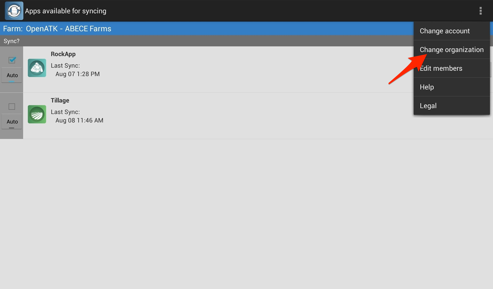
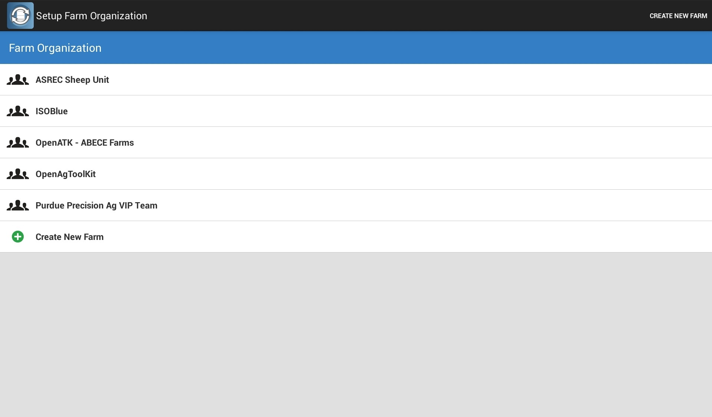

Changing Trello organization

Tap the overflow icon on the right side of the action bar to find the settings.

Find the option "Change organization" on the overflow list.

The app automatically shows you all the organizations in your Trello account. Tap the one you want to change to, or tap "Create New Farm" to make a new Trello organization.